rm(list=ls()) PSYC122-w17-workbook-answers
Introduction
In Week 17, we aim to further develop skills in visualizing and testing the associations between variables in psychological data.
We do this to learn how to answer research questions like:
- What person attributes predict success in understanding?
- Can people accurately evaluate whether they correctly understand written health information?
These kinds of research questions can be answered using methods like the linear model.
When we do these analyses, we need to think about how we report the results:
- we usually need to report information about the kind of model we specify;
- and we will need to report the nature of the association estimated in our model;
- we usually need to decide, is the association significant?
- does the association reflect a positive or negative relationship between outcome and predictor?
- and is the association we see in our sample data relatively strong or weak?
We will consolidate and extend learning on data visualization:
- focusing on how we edit ggplot() code to produce professional looking plots.
Naming things
I will format dataset names like this:
study-two-general-participants.csv
I will also format variable (data column) names like this: variable
I will also format value or other data object (e.g. cell value) names like this: studyone
I will format functions and library names like this: e.g. function ggplot() or e.g. library {tidyverse}.
The data we will be using
In this activity, we use data from a second 2020 study of the response of adults from a UK national sample to written health information:
study-two-general-participants.csv
Answers
Step 1: Set-up
To begin, we set up our environment in R.
Task 1 – Run code to empty the R environment
Task 2 – Run code to load relevant libraries
library("tidyverse")Warning: package 'tidyr' was built under R version 4.1.1Warning: package 'purrr' was built under R version 4.1.1Warning: package 'stringr' was built under R version 4.1.1── Attaching core tidyverse packages ──────────────────────── tidyverse 2.0.0 ──
✔ dplyr 1.1.4 ✔ readr 2.1.4
✔ forcats 1.0.0 ✔ stringr 1.5.0
✔ ggplot2 3.5.1 ✔ tibble 3.2.1
✔ lubridate 1.9.2 ✔ tidyr 1.3.0
✔ purrr 1.0.1
── Conflicts ────────────────────────────────────────── tidyverse_conflicts() ──
✖ dplyr::filter() masks stats::filter()
✖ dplyr::lag() masks stats::lag()
ℹ Use the conflicted package (<http://conflicted.r-lib.org/>) to force all conflicts to become errorsStep 2: Load the data
Task 3 – Read in the data file we will be using
The data file is called:
study-two-general-participants.csv
Use the read_csv() function to read the data file into R:
study.two.gen <- read_csv("study-two-general-participants.csv")Rows: 172 Columns: 12
── Column specification ────────────────────────────────────────────────────────
Delimiter: ","
chr (5): participant_ID, study, GENDER, EDUCATION, ETHNICITY
dbl (7): mean.acc, mean.self, AGE, SHIPLEY, HLVA, FACTOR3, QRITOTAL
ℹ Use `spec()` to retrieve the full column specification for this data.
ℹ Specify the column types or set `show_col_types = FALSE` to quiet this message.When you read the data file in, give the data object you create a distinct name e.g. study.two.gen.
Task 4 – Inspect the data file
Use the summary() or head() functions to take a look.
head(study.two.gen)# A tibble: 6 × 12
participant_ID mean.acc mean.self study AGE SHIPLEY HLVA FACTOR3 QRITOTAL
<chr> <dbl> <dbl> <chr> <dbl> <dbl> <dbl> <dbl> <dbl>
1 studytwo.1 0.411 6.07 studyt… 26 27 6 50 9
2 studytwo.10 0.607 8.5 studyt… 38 24 9 58 15
3 studytwo.100 0.875 8.93 studyt… 66 40 13 60 20
4 studytwo.101 0.964 8.5 studyt… 21 31 11 59 14
5 studytwo.102 0.714 7.07 studyt… 74 35 7 52 18
6 studytwo.103 0.768 5.07 studyt… 18 40 11 54 15
# ℹ 3 more variables: GENDER <chr>, EDUCATION <chr>, ETHNICITY <chr>summary(study.two.gen) participant_ID mean.acc mean.self study
Length:172 Min. :0.4107 Min. :3.786 Length:172
Class :character 1st Qu.:0.6786 1st Qu.:6.411 Class :character
Mode :character Median :0.7679 Median :7.321 Mode :character
Mean :0.7596 Mean :7.101
3rd Qu.:0.8393 3rd Qu.:7.946
Max. :0.9821 Max. :9.000
AGE SHIPLEY HLVA FACTOR3
Min. :18.00 Min. :23.00 Min. : 3.000 Min. :29.00
1st Qu.:25.00 1st Qu.:32.75 1st Qu.: 7.750 1st Qu.:47.00
Median :32.50 Median :36.00 Median : 9.000 Median :51.00
Mean :35.37 Mean :35.13 Mean : 9.064 Mean :51.24
3rd Qu.:44.00 3rd Qu.:39.00 3rd Qu.:11.000 3rd Qu.:56.25
Max. :76.00 Max. :40.00 Max. :14.000 Max. :63.00
QRITOTAL GENDER EDUCATION ETHNICITY
Min. : 6.00 Length:172 Length:172 Length:172
1st Qu.:12.00 Class :character Class :character Class :character
Median :14.00 Mode :character Mode :character Mode :character
Mean :13.88
3rd Qu.:16.00
Max. :20.00 Even though you have done this before, you will want to do it again, here, and pay particular attention to what you see, for the numeric variables, in the information about minimum (Min.) and maximum (Max.) values.
Step 3: Use histograms to examine the distributions of variables
Revise: practice to strengthen skills
Task 5 – Draw histograms to examine the distributions of variables
hint: Task 5
Use ggplot() with geom_histogram().
When we create a plot, we take things step-by-step.
Here’s an example you have seen before: run the lines of code and see the result in the Plots window in R-Studio.
ggplot(data = study.two.gen, aes(x = mean.acc)) +
geom_histogram()`stat_bin()` using `bins = 30`. Pick better value with `binwidth`.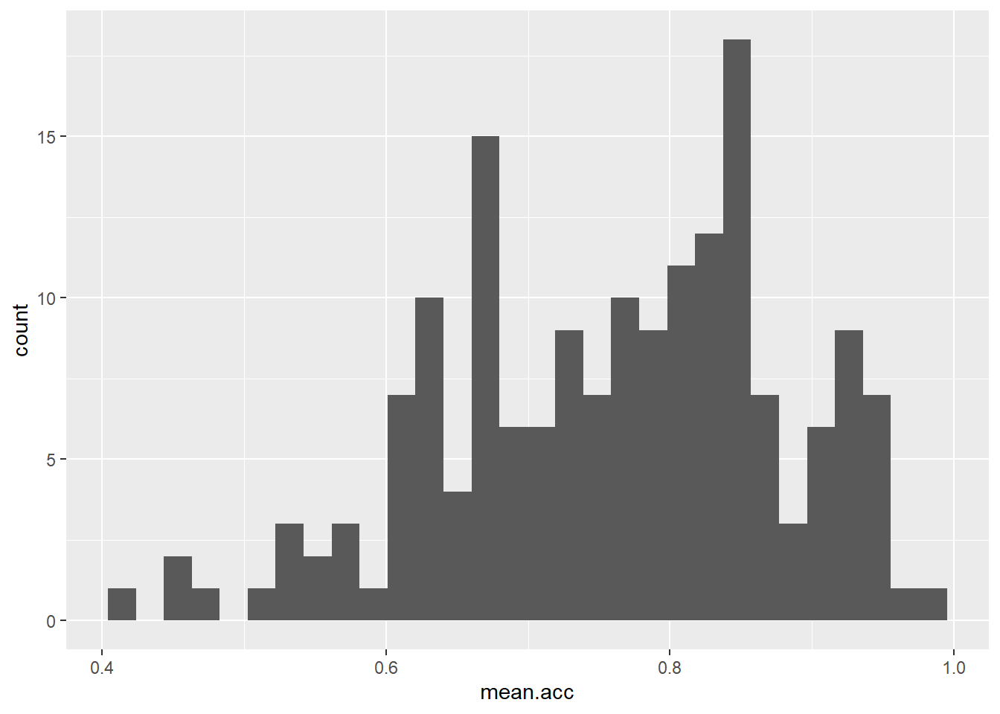
These are the steps, set out one at a time:
ggplot(...)you tell R you want to make a plot using theggplot()functionggplot(data = study.two.gen ...)you tell R you want to make a plot with thestudy.two.gendataggplot(..., aes(x = mean.acc))you tell R that you want to make a plot with the variablemean.acc– here, you specify the aesthetic mapping,x = mean.accggplot(...) + geom_histogram()you tell R you want to plot values ofmean.accas a histogram
Notice that the code works the same whether we have the different bits of code on the same line or in a series of lines.
Revise: make sure you are confident about doing these things
Task 6 – Practice editing the appearance of a histogram plot step-by-step
Start by constructing a basic histogram.
hint: Task 6 – Choose whichever numeric variable from the study.two.gen dataset you please
hint: Task 6 – Use the line-by-line format to break the plot code into steps
It will make it easier to read, and it will make it easier to add edits e.g.
ggplot(data = study.two.gen, aes(x = SHIPLEY)) +
geom_histogram()`stat_bin()` using `bins = 30`. Pick better value with `binwidth`.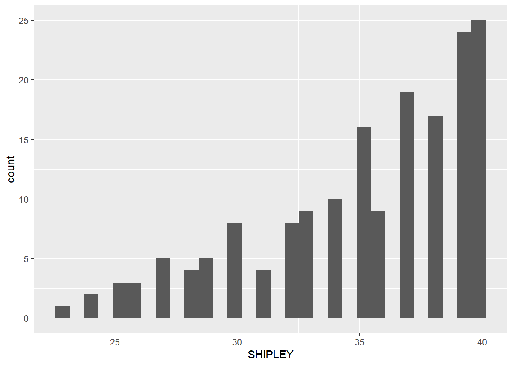
We are going to revise editing:
- The appearance of the bars using
binwidth; - The colour of the background using
theme_bw(); - The appearance of the labels using `labs().
Then we are going to try some new moves:
- Setting the x-axis limits to reflect the full range of possible scores on the x-axis variable;
- Adding annotation – here, a vertical line – indicating the sample average for a variable.
Questions: Task 6
- Q.1. Edit the appearance of the bars by specifying a
binwidthvalue.
ggplot(data = study.two.gen, aes(x = SHIPLEY)) +
geom_histogram(binwidth = 2)- Q.2. Then add an edit to the appearance of the background using
theme_bw().
ggplot(data = study.two.gen, aes(x = SHIPLEY)) +
geom_histogram(binwidth = 2) +
theme_bw()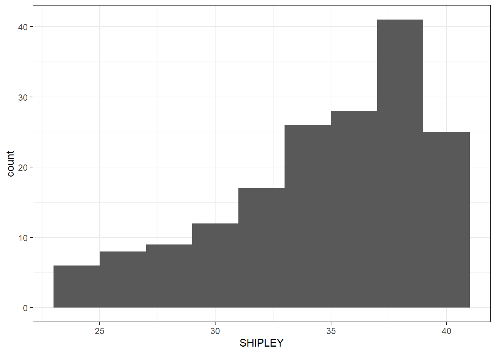
- Q.3. Then add an edit to the appearance of the labels using
labs().
ggplot(data = study.two.gen, aes(x = SHIPLEY)) +
geom_histogram(binwidth = 2) +
theme_bw() +
labs(x = "SHIPLEY", y = "frequency count")
Introduce: make some new moves
- Q.4. Now add an edit by setting the x-axis limits using
x.lim().
ggplot(data = study.two.gen, aes(x = SHIPLEY)) +
geom_histogram(binwidth = 2) +
theme_bw() +
labs(x = "Vocabulary (SHIPLEY)", y = "frequency count") +
xlim(0,40)Warning: Removed 2 rows containing missing values or values outside the scale range
(`geom_bar()`).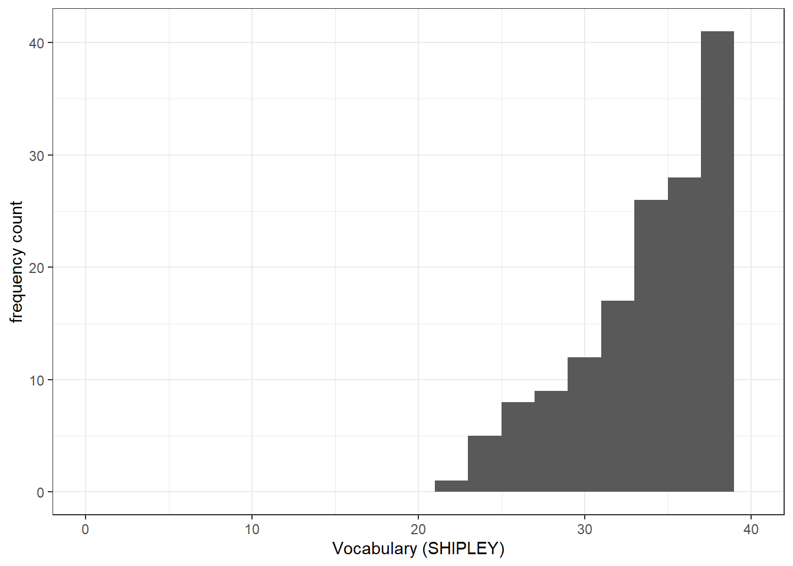
- Q.5. Then add an edit to draw a vertical line to show the mean value of the variable you are plotting.
ggplot(data = study.two.gen, aes(x = SHIPLEY)) +
geom_histogram(binwidth = 2) +
theme_bw() +
labs(x = "Vocabulary (SHIPLEY)", y = "frequency count") +
xlim(0,40) +
geom_vline(xintercept = mean(study.two.gen$SHIPLEY), colour = "red", size = 1.5)Warning: Using `size` aesthetic for lines was deprecated in ggplot2 3.4.0.
ℹ Please use `linewidth` instead.Warning: Removed 2 rows containing missing values or values outside the scale range
(`geom_bar()`).
Q.6. Can you find information on how to define the limits on the x-axis and on the y-axis?
hint: Q.6. You can see the information in this week’s how-to but try a search online for “ggplot reference xlim”.
A.6. See ggplot reference information on setting limits here:
https://ggplot2.tidyverse.org/reference/lims.html
Q.7. Can you find information on how to a reference line?
hint: Q.7. You can see the information in this week’s how-to but try a search online for “ggplot reference vline”.
A.7. See ggplot reference information on setting limits here:
Step 4: Now draw scatterplots to examine associations between variables
Consolidation: should be no surprises here
Task 7 – Create a scatterplot to examine the association between some variables
Between the outcome mean.acc and each of three numeric potential predictor variables SHIPLEY, HLVA and AGE.
hint: Task 7 – We are working with geom_point() and you need x and y aesthetic mappings.
hint: Task 7 – The outcome variable mean.acc has to be mapped to the y-axis using ...y = ...
ggplot(data = study.two.gen, aes(x = SHIPLEY, y = mean.acc)) +
geom_point()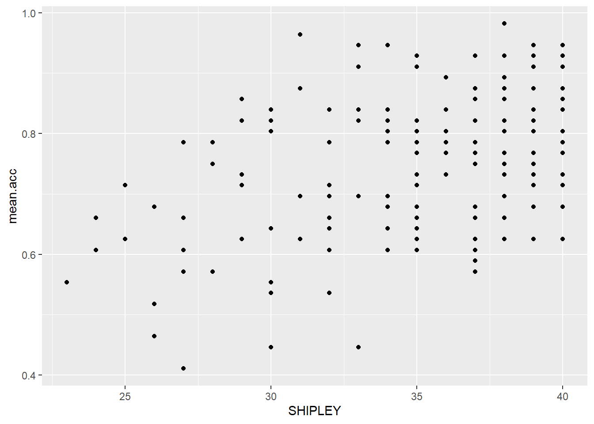
ggplot(data = study.two.gen, aes(x = HLVA, y = mean.acc)) +
geom_point()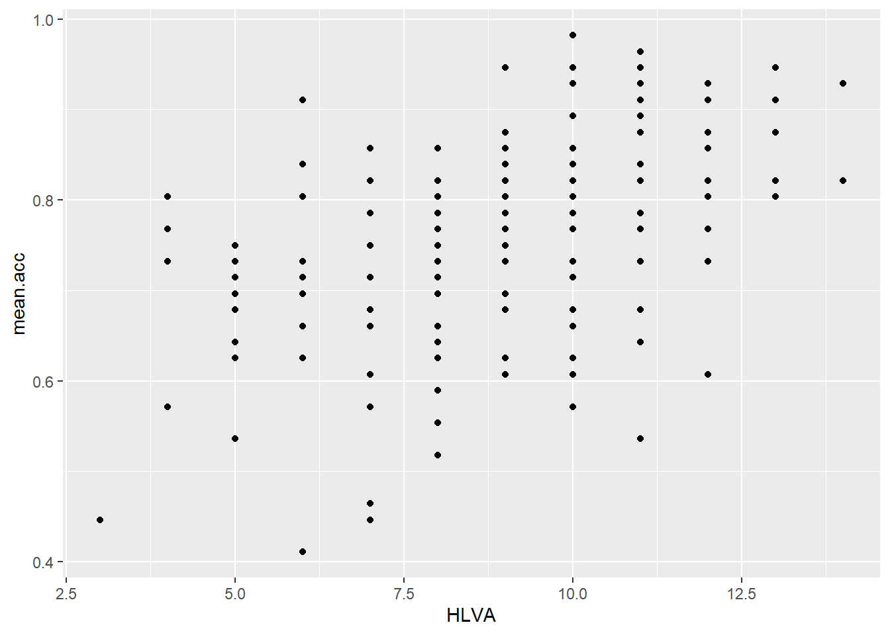
ggplot(data = study.two.gen, aes(x = AGE, y = mean.acc)) +
geom_point()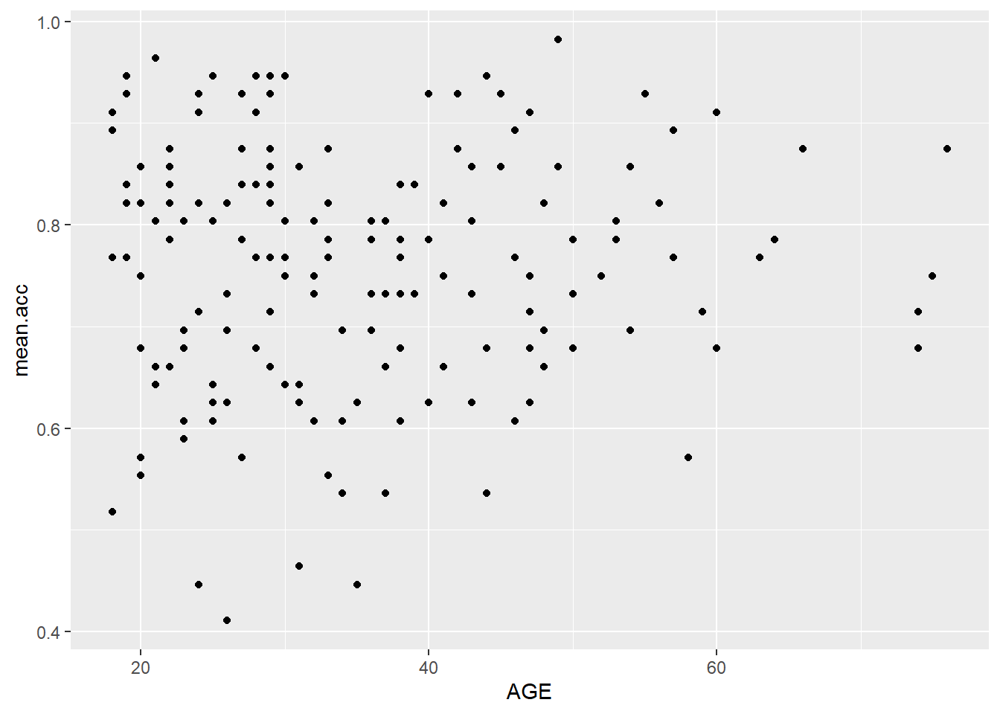
Revise: make sure you are confident about doing these things
Task 8 – Edit the appearance of each plot step-by-step
hint: Task 8 – You may want to use the same plot appearance choices for all plots
Because a consistent appearance is generally neater and easier for your audience to process.
hint: Task 8 – You can find links to reference information on options in the how-to guide
Use the information to make the plots pleasing in appearance to you.
hint: Task 8 – Do not be afraid to copy then paste code you re-use.
But be careful that things like axis values are sensible for each variable.
Questions: Task 8
- Q.8. – First, edit the appearance of the points using
alpha,size,shape, andcolour:
ggplot(data = study.two.gen, aes(x = SHIPLEY, y = mean.acc)) +
geom_point(alpha = 0.5, size = 2, colour = "blue", shape = 'square')
ggplot(data = study.two.gen, aes(x = HLVA, y = mean.acc)) +
geom_point(alpha = 0.5, size = 2, colour = "blue", shape = 'square')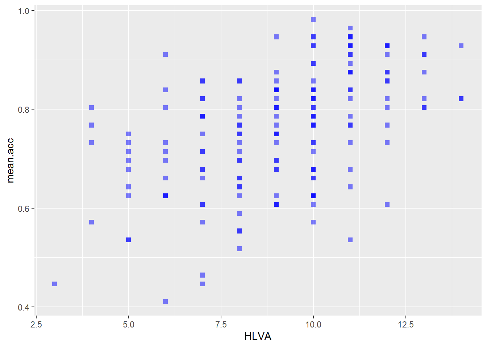
ggplot(data = study.two.gen, aes(x = AGE, y = mean.acc)) +
geom_point(alpha = 0.5, size = 2, colour = "blue", shape = 'square')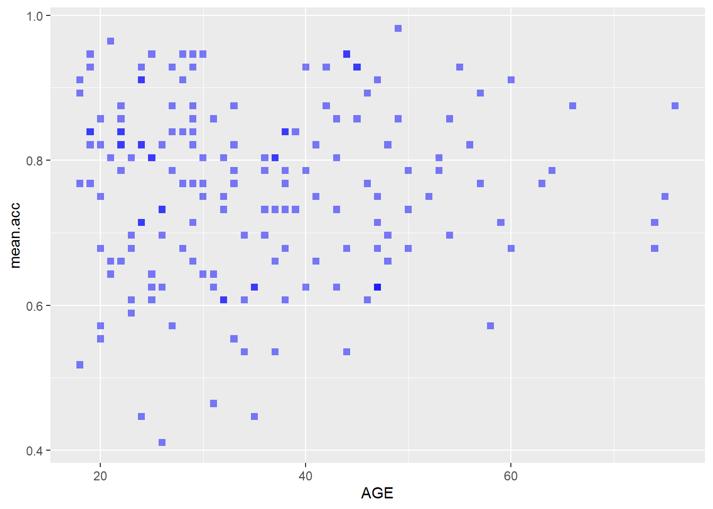
- Q.9. – Then edit the colour of the background using
theme_bw():
ggplot(data = study.two.gen, aes(x = SHIPLEY, y = mean.acc)) +
geom_point(alpha = 0.5, size = 2, colour = "blue", shape = 'square') +
theme_bw()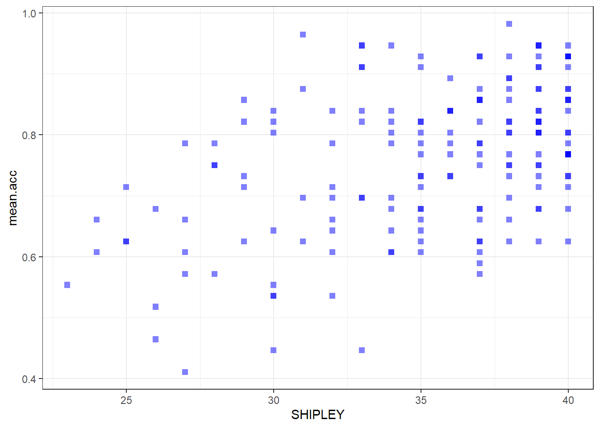
ggplot(data = study.two.gen, aes(x = HLVA, y = mean.acc)) +
geom_point(alpha = 0.5, size = 2, colour = "blue", shape = 'square') +
theme_bw()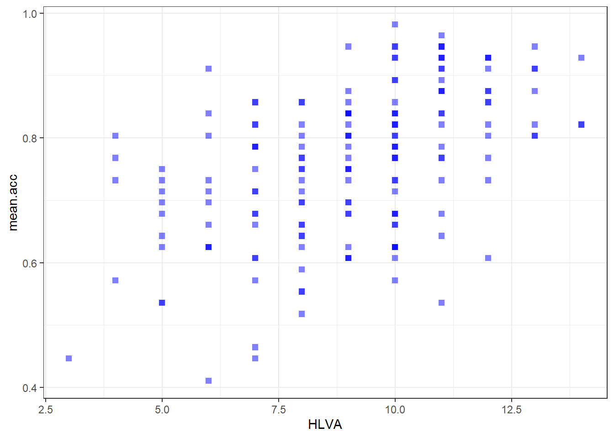
ggplot(data = study.two.gen, aes(x = AGE, y = mean.acc)) +
geom_point(alpha = 0.5, size = 2, colour = "blue", shape = 'square') +
theme_bw()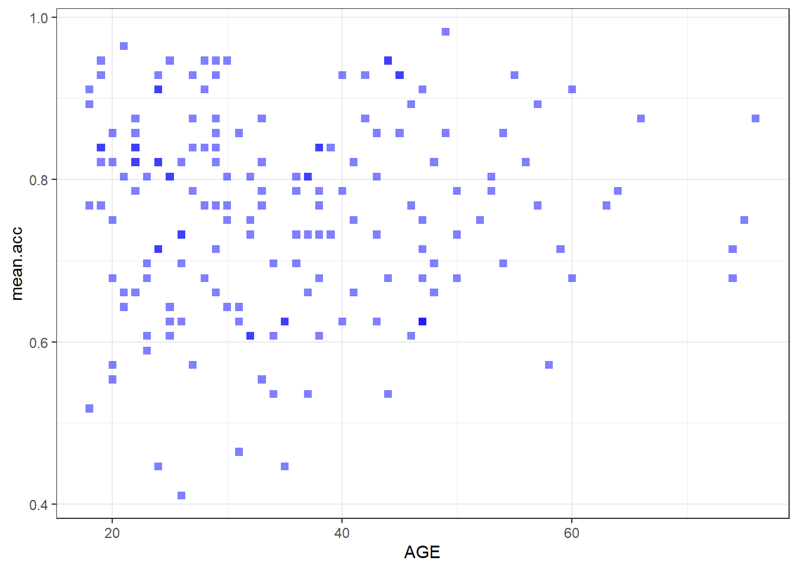
- Q.10. – Then edit the appearance of the labels using
labs():
ggplot(data = study.two.gen, aes(x = SHIPLEY, y = mean.acc)) +
geom_point(alpha = 0.5, size = 2, colour = "blue", shape = 'square') +
theme_bw() +
labs(x = "SHIPLEY", y = "mean accuracy")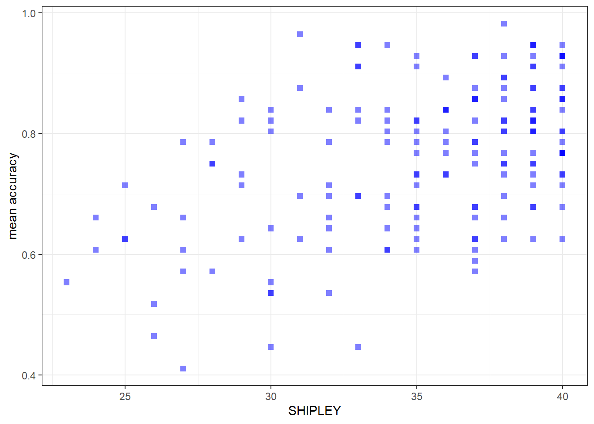
ggplot(data = study.two.gen, aes(x = HLVA, y = mean.acc)) +
geom_point(alpha = 0.5, size = 2, colour = "blue", shape = 'square') +
theme_bw() +
labs(x = "HLVA", y = "mean accuracy")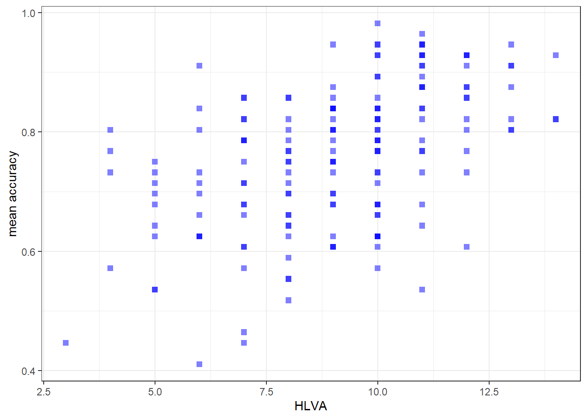
ggplot(data = study.two.gen, aes(x = AGE, y = mean.acc)) +
geom_point(alpha = 0.5, size = 2, colour = "blue", shape = 'square') +
theme_bw() +
labs(x = "Age (Years)", y = "mean accuracy")
Introduce: make some new moves
- Q.11. – Then set the x-axis and y-axis limits to the minimum-maximum ranges of the variables you are plotting
- hint: Q.11. – For these plots the y-axis limits will be the same because the outcome stays the same
- hint: Q.11. – But the x-axis limits will be different for each different predictor variable
- hint: Q.11. – The minimum value will always be 0
ggplot(data = study.two.gen, aes(x = SHIPLEY, y = mean.acc)) +
geom_point(alpha = 0.5, size = 2, colour = "blue", shape = 'square') +
theme_bw() +
labs(x = "SHIPLEY", y = "mean accuracy") +
xlim(0, 40) + ylim(0, 1)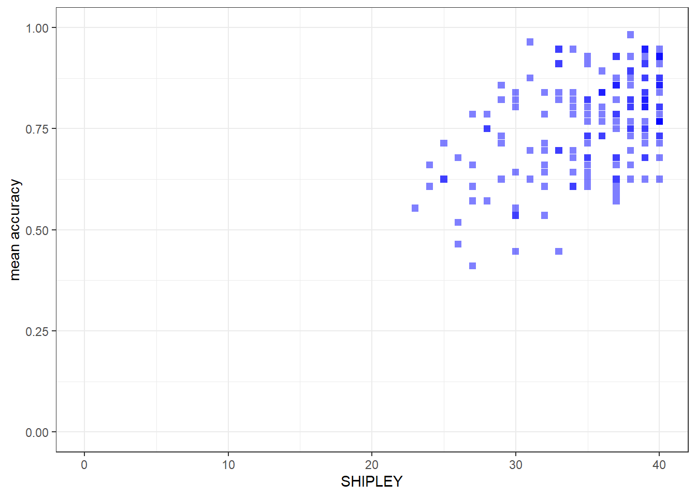
ggplot(data = study.two.gen, aes(x = HLVA, y = mean.acc)) +
geom_point(alpha = 0.5, size = 2, colour = "blue", shape = 'square') +
theme_bw() +
labs(x = "HLVA", y = "mean accuracy") +
xlim(0, 16) + ylim(0, 1)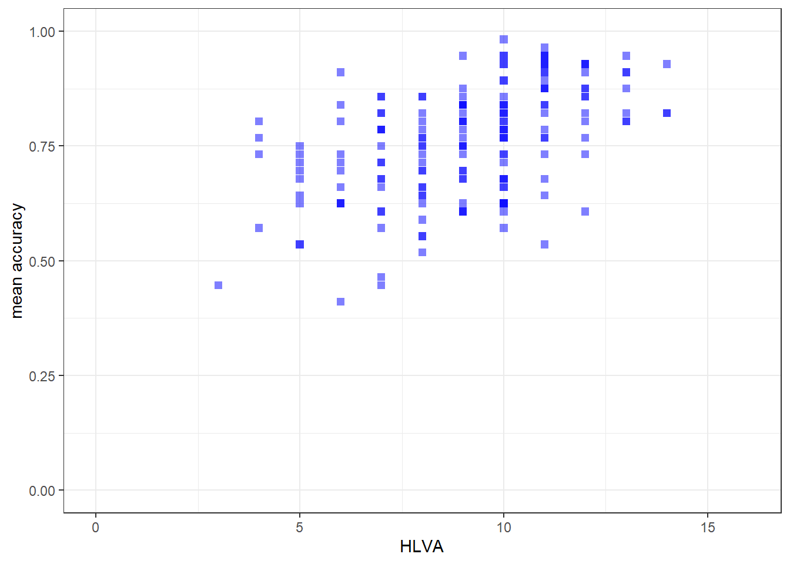
ggplot(data = study.two.gen, aes(x = AGE, y = mean.acc)) +
geom_point(alpha = 0.5, size = 2, colour = "blue", shape = 'square') +
theme_bw() +
labs(x = "Age (Years)", y = "mean accuracy") +
xlim(0, 80) + ylim(0, 1)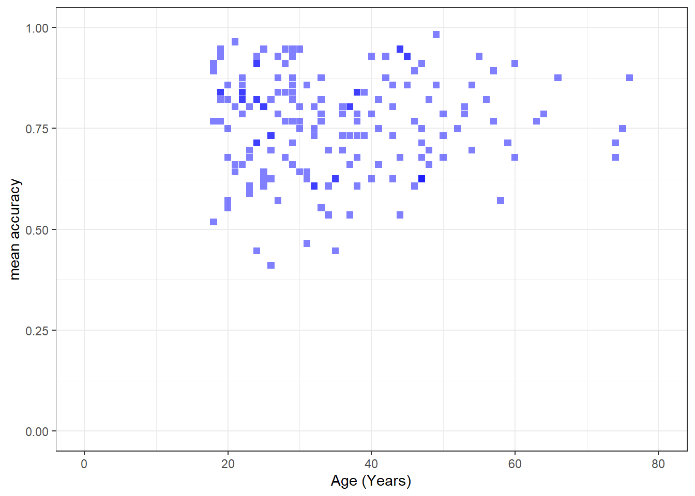
Step 5: Use correlation to to answer the research questions
Revise: make sure you are confident about doing these things
One of our research questions is:
- What person attributes predict success in understanding?
Task 9 – Examine the correlations between the outcome variable and predictor variables
hint: Task 9 – We use cor.test()
hint: Task 9 – You can look at the how-to guide for more advice
You need to run three separate correlations:
- between mean accuracy and SHIPLEY
- between mean accuracy and HLVA and
- between mean accuracy and AGE
cor.test(study.two.gen$SHIPLEY, study.two.gen$mean.acc, method = "pearson", alternative = "two.sided")
Pearson's product-moment correlation
data: study.two.gen$SHIPLEY and study.two.gen$mean.acc
t = 6.8493, df = 170, p-value = 1.299e-10
alternative hypothesis: true correlation is not equal to 0
95 percent confidence interval:
0.3390103 0.5746961
sample estimates:
cor
0.4650537 cor.test(study.two.gen$HLVA, study.two.gen$mean.acc, method = "pearson", alternative = "two.sided")
Pearson's product-moment correlation
data: study.two.gen$HLVA and study.two.gen$mean.acc
t = 7.5288, df = 170, p-value = 2.866e-12
alternative hypothesis: true correlation is not equal to 0
95 percent confidence interval:
0.3787626 0.6044611
sample estimates:
cor
0.5000559 cor.test(study.two.gen$AGE, study.two.gen$mean.acc, method = "pearson", alternative = "two.sided")
Pearson's product-moment correlation
data: study.two.gen$AGE and study.two.gen$mean.acc
t = 0.30121, df = 170, p-value = 0.7636
alternative hypothesis: true correlation is not equal to 0
95 percent confidence interval:
-0.1269774 0.1721354
sample estimates:
cor
0.02309589 Now use the results from the correlations to answer the following questions.
Q.12. – What is
r, the coefficient for the correlation betweenmean.accandSHIPLEY?A.12. – r = 0.4650537
Q.13. – Is the correlation between
mean.accandHLVAsignificant?A.13. – r is significant, p < .05
Q.14. – What are the values for t and p for the significance test for the correlation between
mean.accandAGE?A.14. – t = 0.30121, p = 0.7636
Q.15. – For which pair of outcome-predictor variables is the correlation the largest?
A.15. – The correlation is the largest between
mean.accandHLVA.Q.16. – What is the sign or direction of each of the correlations?
A.16. – All the correlations are positive.
Step 6: Use a linear model to to answer the research questions
Introduce: Make some new moves
One of our research questions is:
- What person attributes predict success in understanding?
Task 10 – Examine the relation between outcome mean accuracy (mean.acc)
And each of the predictors: SHIPLEY, HLVA and AGE
hint: Task 10 – Use lm()
hint: Task 10 – Run three separate lm() analyses
All with mean.acc as the outcome but each with one predictor variable
hint: Task 10 – See the how-to guide for example code
model <- lm(mean.acc ~ SHIPLEY, data = study.two.gen)
summary(model)
Call:
lm(formula = mean.acc ~ SHIPLEY, data = study.two.gen)
Residuals:
Min 1Q Median 3Q Max
-0.285771 -0.076662 0.002099 0.079416 0.257793
Coefficients:
Estimate Std. Error t value Pr(>|t|)
(Intercept) 0.308027 0.066426 4.637 7.01e-06 ***
SHIPLEY 0.012854 0.001877 6.849 1.30e-10 ***
---
Signif. codes: 0 '***' 0.001 '**' 0.01 '*' 0.05 '.' 0.1 ' ' 1
Residual standard error: 0.107 on 170 degrees of freedom
Multiple R-squared: 0.2163, Adjusted R-squared: 0.2117
F-statistic: 46.91 on 1 and 170 DF, p-value: 1.299e-10model <- lm(mean.acc ~ HLVA, data = study.two.gen)
summary(model)
Call:
lm(formula = mean.acc ~ HLVA, data = study.two.gen)
Residuals:
Min 1Q Median 3Q Max
-0.27457 -0.06777 0.01474 0.08025 0.23146
Coefficients:
Estimate Std. Error t value Pr(>|t|)
(Intercept) 0.522016 0.032544 16.040 < 2e-16 ***
HLVA 0.026207 0.003481 7.529 2.87e-12 ***
---
Signif. codes: 0 '***' 0.001 '**' 0.01 '*' 0.05 '.' 0.1 ' ' 1
Residual standard error: 0.1047 on 170 degrees of freedom
Multiple R-squared: 0.2501, Adjusted R-squared: 0.2456
F-statistic: 56.68 on 1 and 170 DF, p-value: 2.866e-12model <- lm(mean.acc ~ AGE, data = study.two.gen)
summary(model)
Call:
lm(formula = mean.acc ~ AGE, data = study.two.gen)
Residuals:
Min 1Q Median 3Q Max
-0.34684 -0.08464 0.01084 0.08323 0.21968
Coefficients:
Estimate Std. Error t value Pr(>|t|)
(Intercept) 0.7519965 0.0267206 28.143 <2e-16 ***
AGE 0.0002136 0.0007092 0.301 0.764
---
Signif. codes: 0 '***' 0.001 '**' 0.01 '*' 0.05 '.' 0.1 ' ' 1
Residual standard error: 0.1208 on 170 degrees of freedom
Multiple R-squared: 0.0005334, Adjusted R-squared: -0.005346
F-statistic: 0.09073 on 1 and 170 DF, p-value: 0.7636Notice that we do the linear model in the steps:
model <- lm(...)fit the model usinglm(...), and give the model a name, here, we call itmodel;...lm(mean.acc ~ SHIPLEY...)tell R you want a model of the outcomemean.accpredicted~by the predictorSHIPLEY...data = study.two)tell R that the variables you name in the formula live in thestudy.twodataset.summary(model)ask R for a summary of the model you calledmodel.
Notice that R has a general formula syntax:
outcome ~ predictor *or* y ~ x
- and uses the same format across a number of different functions;
- each time, the left of the tilde symbol
~is some output or outcome; - and the right of the tilde
~is some input or predictor or set of predictors.
Questions: Task 10
If you look at the model summary you can answer the following questions.
Q.17. What is the estimate for the coefficient of the effect of the predictor
HLVAonmean.acc?A.17. 0.026207
Q.18. Is the effect significant?
A.18. It is significant, p < .05
Q.19. What are the values for t and p for the significance test for the coefficient?
A.19. t = 7.529, p = 2.87e-12
Q.20. How would you describe in words the shape or direction of the association between
HLVAandmean.acc?A.20. The slope coefficient – and a scatterplot (draw it) – suggest that as HLVA scores increase so also do mean accuracy scores.
Q.21. How how would you describe the relations apparent between the predictor and outcome in all three models?
A.21. It is possible to see, given coefficient estimates, that the association between predictor and outcome is positive for each model: mean accuracy appears to increase for increasing values of SHIPLEY vocabulary, HLVA health literacy, and age.
Step 7: Use a linear model to generate predictions
Introduce: make some new moves
Task 11 – We can use the model we have just fitted to plot the model predictions
hint: Task 11 – We are going to draw a scatterplot and add a line
The line will show the model predictions, given the model intercept and effect coefficient estimates.
First fit a model and get a summary: model the relationship between mean.acc and HLVA
model <- lm(mean.acc ~ HLVA, data = study.two.gen)
summary(model)
Call:
lm(formula = mean.acc ~ HLVA, data = study.two.gen)
Residuals:
Min 1Q Median 3Q Max
-0.27457 -0.06777 0.01474 0.08025 0.23146
Coefficients:
Estimate Std. Error t value Pr(>|t|)
(Intercept) 0.522016 0.032544 16.040 < 2e-16 ***
HLVA 0.026207 0.003481 7.529 2.87e-12 ***
---
Signif. codes: 0 '***' 0.001 '**' 0.01 '*' 0.05 '.' 0.1 ' ' 1
Residual standard error: 0.1047 on 170 degrees of freedom
Multiple R-squared: 0.2501, Adjusted R-squared: 0.2456
F-statistic: 56.68 on 1 and 170 DF, p-value: 2.866e-12Q.22. What is the coefficient estimate for the intercept?
A.22. 0.522016
Q.23. What is the coefficient estimate for the slope of
HLVA(see earlier)?A.23. 0.026207
Second, use the geom_point() to draw a scatterplot and geom_abline() function to draw the prediction line representing the association between this outcome and predictor
ggplot(data = study.two.gen, aes(x = HLVA, y = mean.acc)) +
geom_point(alpha = 0.5, size = 2, colour = "blue", shape = 'square') +
geom_abline(intercept = 0.522016, slope = 0.026207, colour = "red", size = 1.5) +
theme_bw() +
labs(x = "HLVA", y = "mean accuracy") +
xlim(0, 15) + ylim(0, 1)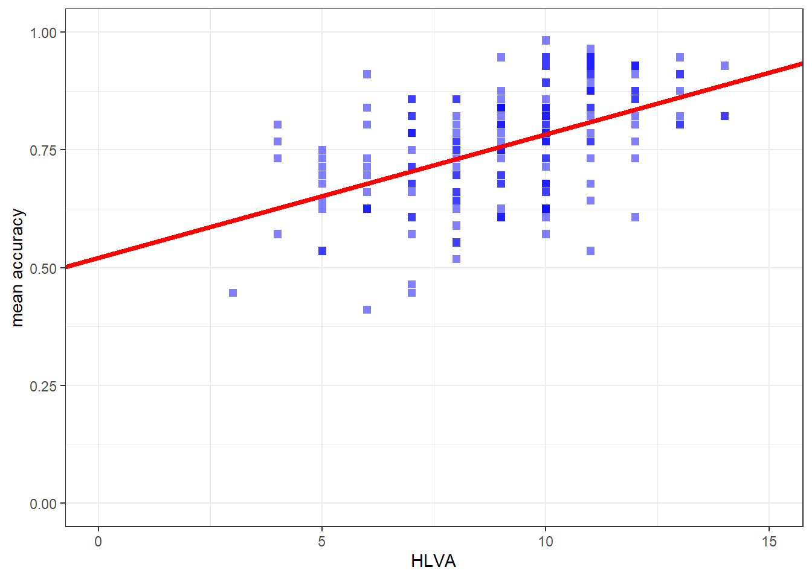
You can see reference information here: